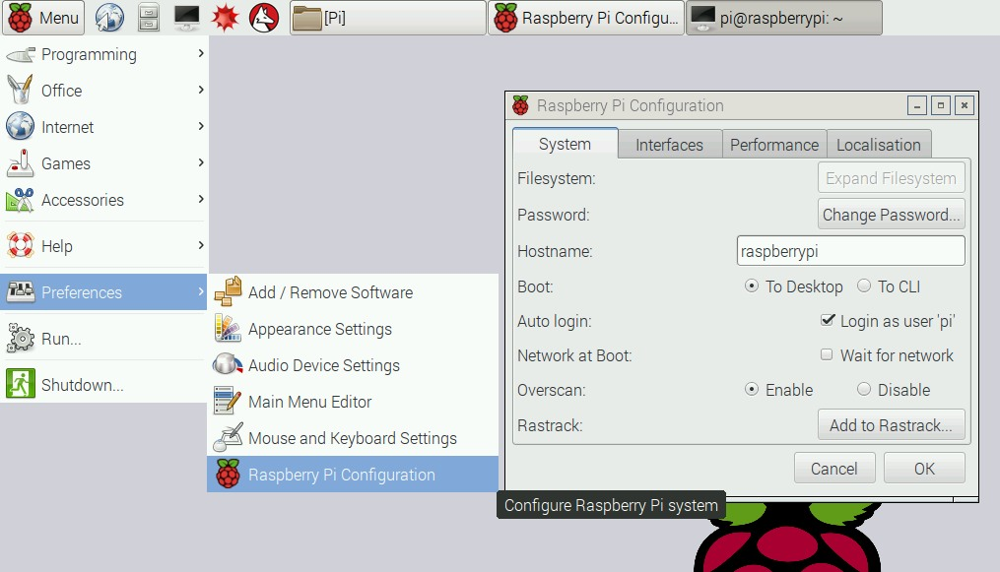

Describes preparing the computer which will run the PowerView application.
The PowerView application requires .NET 6 or greater.
The recommended operating system is Raspberry PI OS. It can be installed easily with the Raspberry Pi Imager tool. Alternatively it can be installed with the NOOBS installer. Raspberry PI OS downloads are available here.
Once Raspberry PI OS is installed and running it is a good idea to configure Raspberry Pi OS. One option is the raspi-config tool. Alternatively if the Raspberry Pi OS version installed has a graphical user interface thre is also this configuration tool:

It is strongly recommended to change the pi password to something non-default. Also enable SSH (if a remote command line to the Raspberry Pi is required).
When the RPi has been booted install prerequisite software using these command lines (note: They can take rather long to complete):
sudo apt-get update sudo apt-get upgrade
PowerView needs the ASP.NET Runtime version 6 or better installed. Unfortunately there is no official installer for the Raspberry Pi. To install ASP.NET Runtime on the Raspberry Pi follow guides on the Internet or run the install script that came with the PowerView application.
To run the ASP.NET Runtime installer script from the PowerView package run this:
chmod +x InstallDotNet.sh && sudo ./InstallDotNet.sh
To verify the ASP.NET Runtime installation execute this command line:
dotnet --info
Download and install ASP.NET Runtime version 6 or greater from here.
Download and install ASP.NET Runtime version 6 or greater from here.